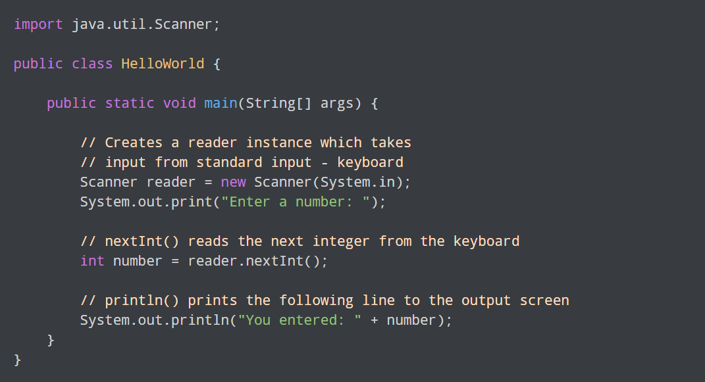

자바란 무엇인가?
Java는 Sun Microsystems가 1995년에 처음 출시한 프로그래밍 언어이자 컴퓨팅 플랫폼으로, 수 많은 응용 프로그램 및 웹 사이트가 Java를 설치하지 않으면 작동되지 않으며, 이 수는 매일 늘어나고 있습니다. Java는 빠르고, 안전하며, 안정적입니다. 랩톱에서 데이터 센터, 게임 콘솔에서 과학용 수퍼 컴퓨터, 휴대 전화에서 인터넷에 이르기까지 Java 기술은 어디에나 존재합니다.
최신 버전으로 업그레이드
최신 Java 버전에는 시스템에서 실행되는 Java 응용 프로그램의 성능, 안전성 및 보안을 향상시키는 중요한 개선 사항이 포함되어 있습니다. 이 무료 업데이트를 설치하면 이후에도 안전하고 효율적인 Java 응용 프로그램의 실행이 보장됩니다.
Java 설치 도움말
-
Windows 다운로드 및 설치
-
온라인
수동 설치는 IFTW(Install From The Web) 실행 프로그램 파일을 다운로드하며, 최소한의 사용자 작업을 필요로 합니다. 이 프로그램을 실행하면 웹에서 필요한 파일을 모두 가져오므로, 설치하는 동안 인터넷에 연결되어 있어야 합니다.
-
- Microsoft Windows에 Java를 설치하려면 관리 권한 설정이 필요합니다.
- 온라인 다운로드 옵션 사용에 문제가 있는 경우 오프라인 다운로드 옵션을 시도합니다.
오프라인
오프라인 설치를 수행하려면 수동 Java 다운로드 페이지에서 실행 파일을 다운로드해야 합니다. 이 페이지에는 사용자가 Java를 수동으로 설치하는 데 필요한 모든 파일이 포함되어 있습니다. 설치하는 동안 인터넷에 연결되어 있지 않아도 됩니다. 인터넷에 연결되지 않은 다른 컴퓨터에 파일을 복사하고 설치할 수도 있습니다.
- Microsoft Windows에 Java를 설치하려면 관리 권한 설정이 필요합니다.
-
Mac OS X 다운로드 및 설치
Oracle Java는 Mac 버전 10.7.3 이상에 설치할 수 있습니다. 64비트 브라우저(예: Safari)는 Mac에서 Oracle Java를 실행해야 합니다.
-
Linux 다운로드 및 설치
설치 패키지는 다음 두 가지 유형으로 제공됩니다. -
- Linux 플랫폼의 Java
기록할 수 있는 모든 위치에 (루트 사용자뿐만 아니라) 누구나 설치할 수 있는 아카이브 이진 파일입니다. 그러나 루트 사용자만 시스템 위치에 Java를 설치할 수 있습니다. - RPM 기반 Linux 플랫폼의 Java
Red Hat 및 SuSE와 같은 32비트 RPM 기반 Linux 플랫폼은 시스템 위치에 RPM 이진 파일(.rpm)을 사용합니다. 이 설치를 수행하려면 루트 사용자여야 합니다.
- Linux 플랫폼의 Java
- 요구에 가장 잘 맞는 패키지를 다운로드합니다. 시스템의 원하는 디렉토리에 파일을 다운로드할 수 있습니다.
-
다운로드 및 설치
-
온라인 설치를 계속하기 전에 인터넷 방화벽을 비활성화하는 것이 좋습니다. 일부 경우 방화벽 기본 설정이 Java 온라인 설치와 같은 자동 또는 온라인 설치를 모두 거부하도록
설정되어
있을 수 있습니다. 방화벽이 올바르게 구성되지 않은 경우 특정 상황에서 Java 다운로드/설치 작업이 지연될 수 있습니다. 인터넷 방화벽을 비활성화하는 방법에 대한 지침은 해당
인터넷
방화벽 설명서를 참조하십시오.
-
- 다운로드 파일을 실행합니다.
- 설치 프로세스를 시작합니다. 라이센스 계약서에 동의하면 설치 버튼을 눌러 설치를 계속하세요.
- Oracle은 다양한 제품 공급 업체와 협력 관계를 맺고 있습니다. Java를 설치할 때 이들 업체의 프로그램을 설치할지 묻는 옵션이 표시될 수 있습니다. 필요한 프로그램을 선택했는지 확인한 후 다음 버튼을 눌러 설치를 계속합니다.
- 설치 프로세스의 남은 단계를 확인하는 몇 개의 간단한 대화 상자가 표시된 후 나타나는 마지막 대화 상자에서 닫기를 누릅니다. 그러면 Java 설치 프로세스가 완료됩니다.
- Windows 컴퓨터에서 다른 소프트웨어를 설치 해제하는 것과 동일한 방식으로
이전 버전의 Java를 수동으로 설치 해제할 수 있습니다. -
Windows 10 - 프로그램 제거
- 시작을 누릅니다.
- 설정을 선택합니다.
- 시스템을 선택합니다.
- 응용 프로그램 및 기능을 선택합니다.
- 설치 해제할 프로그램을 선택한 다음 제거 단추를 누릅니다.
- 제거를 완료하려면 프롬프트에 응답합니다.
-
Windows 8 - 프로그램 설치 해제
- [시작]화면에서 [검색]상자에 제어판을 입력합니다. [제어판]을 선택합니다.
- 제어판이 나타나면 [프로그램] 범주에서 프로그램 제거를 선택합니다.
- 제거할 프로그램을 선택한 다음 제거를 마우스 오른쪽 단추로 누른 다음 선택하거나 프로그램 목록 맨 위에 있는 [제거] 옵션을 누릅니다.
- 예를 눌러 프로그램 설치 해제를 확인합니다.
-
Windows 7 및 Vista - 프로그램 제거
- 시작을 누릅니다.
- 제어판을 선택합니다.
- 프로그램을 선택합니다.
- 프로그램 및 기능을 누릅니다.
- 제거할 프로그램을 눌러 선택한 다음 제거 단추를 누릅니다.
-
Windows XP - 프로그램 제거
- 시작을 누릅니다.
- 제어판을 선택합니다.
- 프로그램 추가/제거 제어판 아이콘을 누릅니다.
- 추가/제거 제어판에 Java 소프트웨어 관련 제품을 포함하여 사용자 시스템에 설치된 소프트웨어 목록이 표시됩니다. 제거할 프로그램을 눌러 선택한 다음 제거 단추를 누릅니다.
-
Java 8 시스템 요구사항
-
Windows
- Windows 10(8u51 이상)
- Windows 8.x(데스크톱)
- Windows 7 SP1
- Windows Vista SP2
- Windows Server 2008 R2 SP1(64비트)
- Windows Server 2012 및 2012 R2(64비트)
- RAM: 128MB
- 디스크 공간: 124MB(JRE의 경우), 2MB(Java 업데이트의 경우)
- 프로세서: 최소 Pentium 2 266MHz 프로세서
- 브라우저: Internet Explorer 9 이상, Firefox
-
Mac OS X
- OS X 10.8.3+, 10.9+를 실행하는 Intel 기반 Mac
- 설치용 관리자 권한
- 64비트 브라우저
-
Linux
- Oracle Linux 5.5+
- Oracle Linux 6.x(32비트), 6.x(64비트)
- Oracle Linux 7.x(64비트)(8u20 이상)
- Red Hat Enterprise Linux 5.5+ 6.x(32비트), 6.x(64비트)
- Red Hat Enterprise Linux 7.x(64비트)(8u20 이상)
- Suse Linux Enterprise Server 10 SP2+, 11.x
- Suse Linux Enterprise Server 12.x(64비트)(8u31 이상)
- Ubuntu Linux 12.04 LTS, 13.x
- Ubuntu Linux 14.x(8u25 이상)
- Ubuntu Linux 15.04(8u45 이상)
- Ubuntu Linux 15.10(8u65 이상)
- 브라우저: Firefox
-
Java 7 시스템 요구사항
-
Windows
- Windows 10(7u85 이상)
- Windows 8.x(데스크톱)
- Windows 7 SP1
- Windows Vista SP2
- Windows Server 2008 SP2 및 2008 R2 SP1(64비트)
- Windows Server 2012(64비트) 및 2012 R2(64비트)
- RAM: 128MB; Windows XP (32비트)용 64MB
- 디스크 공간: 124MB
- 브라우저: Internet Explorer 7.0 이상, Firefox 3.6 이상
-
Mac OS X
- OS X 10.7.3+, 10.9+를 실행하는 Intel 기반 Mac
- 설치용 관리자 권한
- 64비트 브라우저
-
Linux
- Oracle Linux 5.5+
- Oracle Linux 6.x(32비트), 6.x(64비트)
- Oracle Linux 7.x(64비트)(7u67 이상)
- Red Hat Enterprise Linux 5.5+ 6.x(32비트), 6.x(64비트)
- Red Hat Enterprise Linux 7.x(64비트)(7u67 이상)
- Suse Linux Enterprise Server 10 SP2, 11.x
- Suse Linux Enterprise Server 12.x(7u75 이상)
- Ubuntu Linux 10.04 이상
- 브라우저: Firefox 3.6 이상
- Windows XP에는 여러 가지 유형의 사용자 계정이 있습니다(예: 게스트 또는 관리자). 소프트웨어를 설치하고 컴퓨터에 다른 변경 사항을 적용하려면 관리 계정이 있어야 합니다.
-
해결책
JRE를 개인용 컴퓨터에 설치하려는 경우 제어판 → 사용자 계정 → 계정 변경 → 계정 이름 선택 → 내 계정 유형 변경 → 컴퓨터 관리자 선택으로 이동하여 사용자의 계정에 관리 권한을 부여할 수 있습니다. 업무용 컴퓨터에 설치하려는 경우 네트워크 관리자에게 문의하여 관리 권한을 요청하십시오.